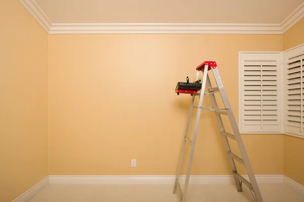
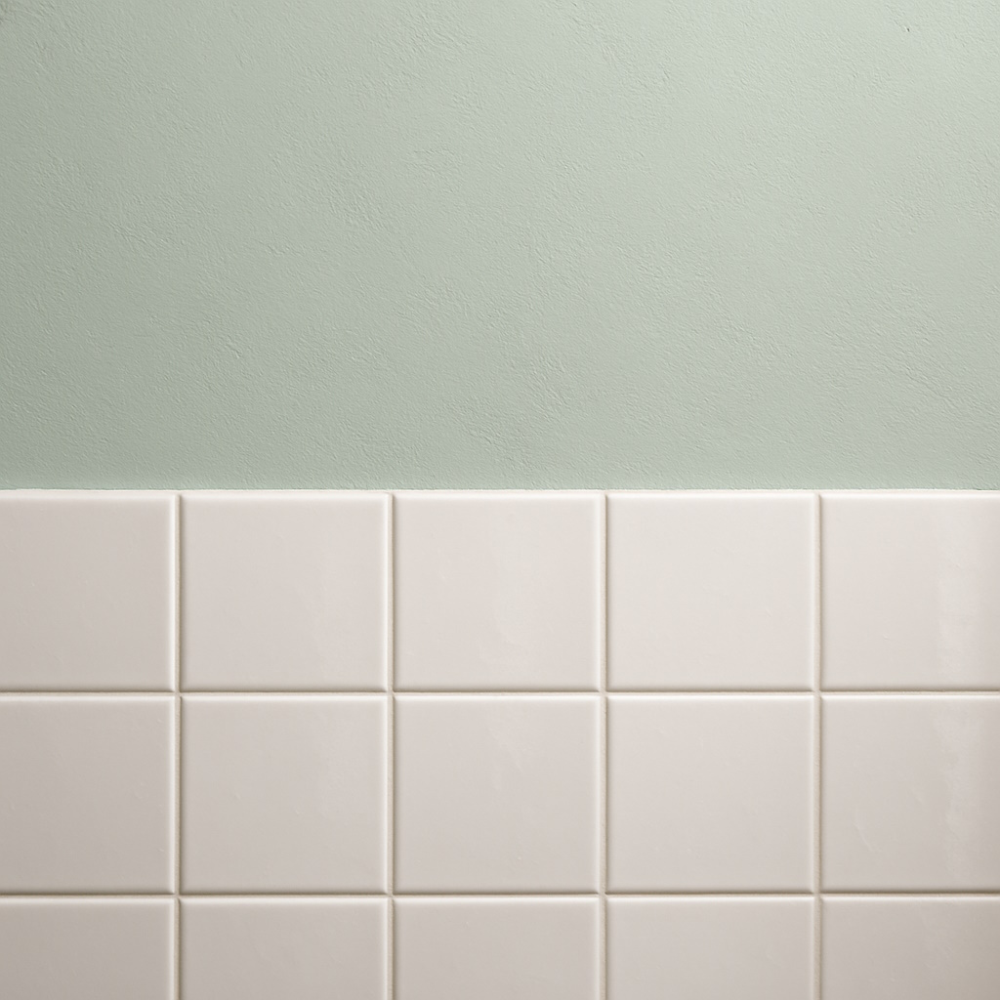
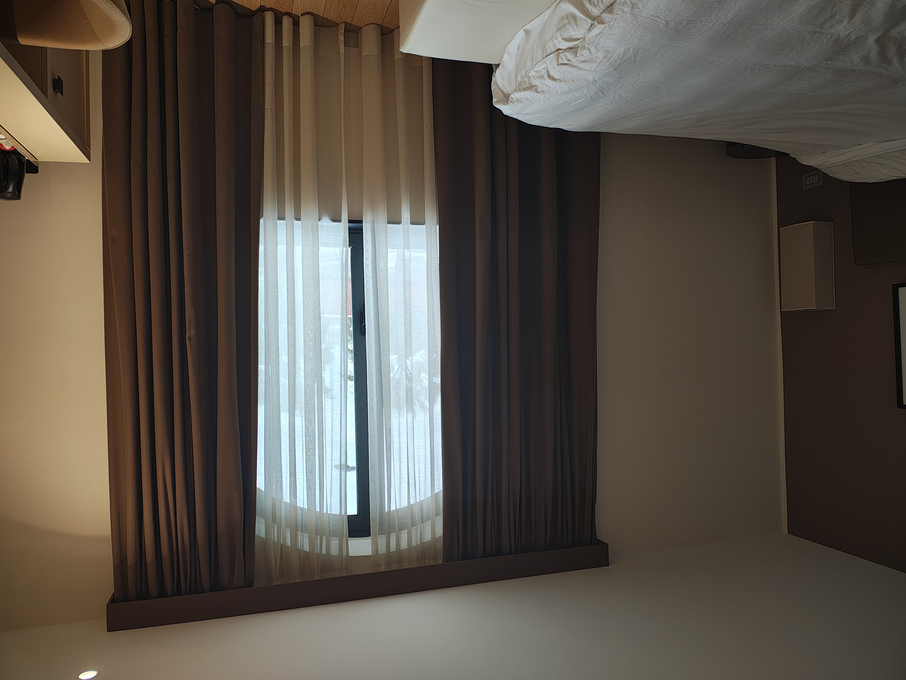

Innenfarben für Wände: Welche Farbe eignet sich für welches Zimmer?
„Eine weisse Wand ist eine weisse Wand“ – so denken viele, bis die Farbe nach dem ersten Wischen Schlieren zieht oder im Bad nach kurzer Zeit Flecken bekommt. Innenfarben unterscheiden sich stark in Qualität, Beständigkeit und Einsatzbereich. In diesem Beitrag erklären wir, welche Farbe sich für welches Zimmer wirklich eignet.
1. Die wichtigsten Arten von Innenfarben
1.1 Dispersionsfarbe (Standard-Wandfarbe)
Die klassische Wandfarbe auf Wasserbasis. Sie lässt sich gut rollen, trocknet schnell und ist in vielen Qualitäten erhältlich. Für normale Wohnräume ist eine hochwertige Dispersionsfarbe meist ausreichend.
1.2 Latexfarbe / hoch scheuerbeständige Farbe
Früher war „Latexfarbe“ tatsächlich gummiartig. Heute sind es meist besonders robuste Dispersionsfarben mit hoher Nassabriebklasse. Sie eignen sich überall dort, wo Wände abwaschbar sein sollen: Flure, Treppenhäuser, Kinderzimmer oder hinter dem Esstisch.
1.3 Silikatfarbe
Eine mineralische Farbe, die mit dem Untergrund „verklebt“ (verkieselt). Sie ist diffusionsoffen und eignet sich vor allem für mineralische Untergründe wie Putz oder Kalksandstein. Besonders interessant bei Altbauten, wo Feuchtigkeit ein Thema ist.
1.4 Spezielle Farben (Anti-Schimmel, Isolierfarben)
Es gibt Spezialprodukte gegen Nikotin-, Wasser- und Rußflecken oder mit schimmelhemmenden Zusätzen. Diese setzen wir gezielt dort ein, wo ein Problem schon sichtbar ist – nicht als Standardlösung.
2. Welche Farbe für welches Zimmer?
Wohnzimmer und Schlafzimmer
Hier geht es vor allem um Optik und angenehmes Raumklima. Eine hochwertige, gut deckende Dispersionsfarbe reicht meist aus. Matte Oberflächen wirken ruhiger und verzeihen kleine Unebenheiten im Putz.
Flur und Treppenhaus
In diesen Bereichen berühren Hände, Taschen und Schuhe häufig die Wände. Wir empfehlen mindestens eine scheuerbeständige Wandfarbe (höhere Nassabriebklasse), die sich feucht reinigen lässt.
Küche
Hinter Arbeitsflächen und Esstisch sind Wände stärker belastet: Spritzer, Fett, Dampf. In solchen Bereichen lohnt sich eine abwaschbare, robuste Farbe – oft als „Küchen- und Badfarbe“ bezeichnet.
Bad und WC
Wo viel Feuchtigkeit oder Kondenswasser entsteht, sind zwei Dinge wichtig: ein geeigneter Untergrund und eine Farbe, die Feuchtigkeit verträgt. Robuste Dispersions- oder Spezialfarben für Feuchträume sind hier die richtige Wahl.
Keller und Technikräume
In Kellern ist das Thema Feuchtigkeit besonders kritisch. Wenn die Wände diffusionsoffen bleiben sollen, können Silikatfarben eine Option sein. Wichtig ist, vorhandene Feuchteursachen zuerst abzuklären – Farbe allein löst keine Abdichtungsprobleme.
3. Deckkraft, Nassabriebklasse & Glanzgrad – was bedeutet das?
Auf jedem Farbeimer stehen technische Angaben, die man kennen sollte:
- Deckkraft: Klasse 1 deckt am besten, Klasse 4 am schlechtesten.
- Nassabriebklasse: Klasse 1–2 = sehr gut abwaschbar, Klasse 5 = nur leichte Beanspruchung.
- Glanzgrad: matt, seidenmatt oder glänzend – je glänzender, desto empfindlicher für Untergrundfehler.
Für Wohnräume sind matte bis seidenmatte Farben der Klassen 1–2 meist eine sehr gute Wahl.
4. Typische Fehler beim Streichen von Innenwänden
- Billigfarbe mit schlechter Deckkraft – doppelt so viel Arbeit.
- falsche Farbe im Bad oder über der Dusche – schnelle Fleckenbildung.
- mangelhafte Vorbereitung: Staub, Nikotin oder Fett nicht entfernt.
- zu wenig Farbmenge eingeplant – Unterschiede zwischen den Eimern sichtbar.
5. Fazit: Die richtige Farbe spart Zeit und Nerven
Wer pro Raum die passende Innenfarbe wählt, hat länger Freude an sauberen, gleichmässigen Wänden – und muss nicht schon nach wenigen Jahren wieder alles überstreichen. Eine gute Beratung und ein Blick auf die technischen Angaben auf dem Farbeimer lohnen sich immer.